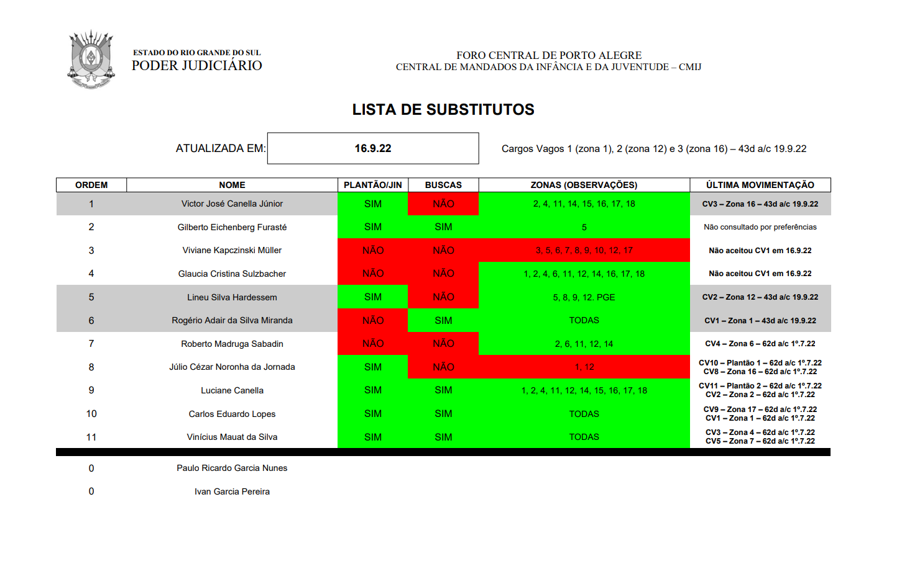

Voltar
Texto não formatado
Usar lista em caso de afastamentos em regra involuntários (licença-saúde, licença-gestante, licença-paternidade, licença-nojo, cargos vagos). Afastamentos em regra voluntários (férias, licença-prêmio, folgas eleitorais, folgas do recesso, etc.) continuam de livre designação do substituído. Movimentações: Não contatado por preferências Mandados atrasados acima de 60 dias Não aceitou Férias a contar de… Em férias Em licença 2 substituições Indicar cargo/zona no cabeçalho da lista e nos casos de recusa. Prazo-padrão para substituições: 2 meses. Em caso de novo edital, a lista não é zerada. Em caso de recusas em número que acarretem o não preenchimento da vaga: a) oferecer o período fracionado, mesmo para quem estiver impossibilitado em algum mês; b) mandar e-mail para todos, mesmo fora da lista, oferecendo a vaga; c) mantendo-se a vaga aberta, impõe-se-a ao mais moderno.